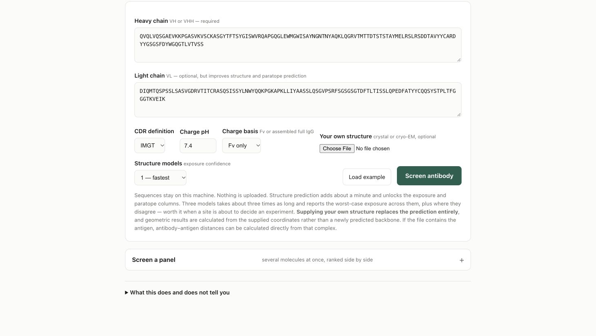
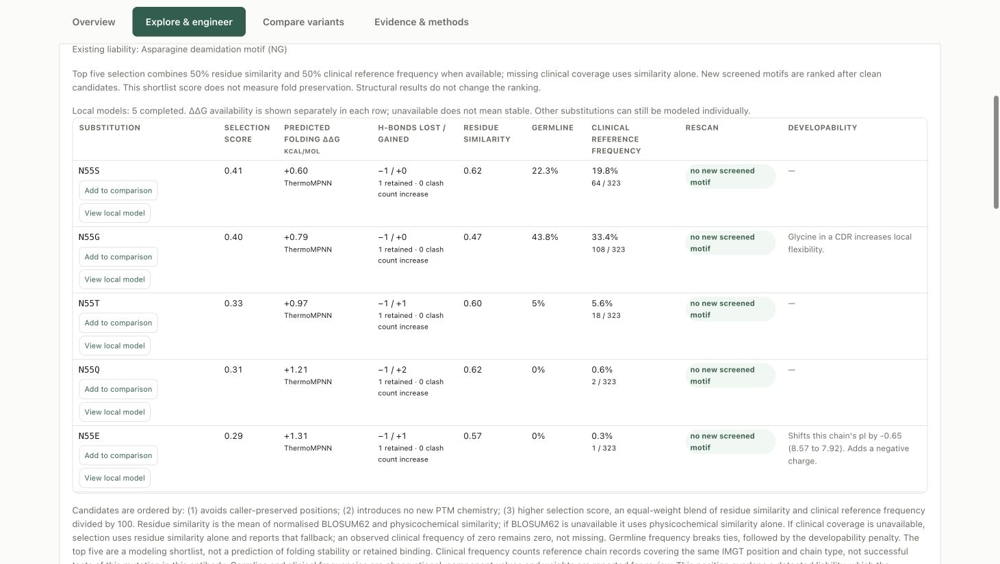

Antibody Atlas quick start and user guide
Preview 0.1.0-rc4 · 25 October 2026 · Guided local installation
Download the editable Word guide
Install and launch on a Mac
Antibody Atlas is a local research workbench. This guide takes you from the release ZIP to a public example, then through individual antibodies, substitutions and panels. This is a preview source release with guided setup, not a signed standalone desktop application.
1 Download and extract
Download antibody-atlas-0.1.0-rc4.zip from the GitHub release below. Double-click the ZIP to extract it. Keep the complete extracted folder together; do not move just the launcher. For confidential work, choose a folder outside automatic cloud sync.
Download the release
2 Install the prerequisites once
Open Terminal from Applications > Utilities. If Homebrew is not installed, follow the instructions at brew.sh, including its final shell setup instructions. Then run the following command. If Apple asks for Command Line Tools, finish that installation and repeat the command.
Install Homebrew
brew install python@3.12 hmmer git
If build tools are requested, run xcode-select --install. You may need an administrator password. Python 3.11 or 3.12 is required. HMMER supports structure prediction; Git is needed to install two dependencies. No GPU, paid prediction-service account, or AI assistant is required.
3 Start Atlas
Inside the extracted folder, double-click Start Antibody Atlas.command. If macOS blocks the downloaded script, use the normal approval options for this specific file in Finder or System Settings > Privacy & Security. Do not disable Gatekeeper globally. On a managed computer, ask your IT team if approval is unavailable.
The first start creates a private Python environment, downloads dependencies and the stability predictor, and opens your browser. Leave Terminal open. Installation and first-use model downloads need internet and may take several minutes or longer. Allow several GB of disk space; 16 GB RAM is a practical starting point, not a measured minimum.
If you prefer Terminal
Type cd followed by a space, drag the extracted folder from Finder into Terminal, and press Return. Then run:
bash run_local.sh
Success: the browser opens http://127.0.0.1:8000/ and shows Screen an antibody for developability liabilities. If it does not open automatically, enter that address in Chrome. Continue with Run your first analysis below. Later starts use the same launcher and reuse the installation.
Linux Windows and optional references
Linux or Windows with WSL2
On Windows, first install WSL2 with Ubuntu 24.04 using Microsoft’s instructions. Run Atlas inside the Ubuntu terminal, not PowerShell. Native Windows is not supported for the complete structure workflow. Extract the release into your Linux home directory and enter that extracted folder.
Microsoft WSL installation
On Ubuntu 24.04, install prerequisites and launch:
sudo apt update
sudo apt install python3 python3-venv python3-dev build-essential hmmer git
python3 --version
bash run_local.sh
The Python version must be 3.11 or 3.12. Other distributions may use different package names. In Windows, open the printed localhost address in Chrome after starting Atlas in Ubuntu. CPU operation is supported. Keep the Ubuntu terminal open.
What has been checked
The rc3 scientific workflow was exercised after a fresh dependency installation on Apple Silicon macOS with Python 3.12 and Chrome. Automated checks cover Linux Python 3.11/3.12 and macOS/Linux startup. This guide update does not establish end-to-end validation on Intel Macs or an actual Windows/WSL2 computer.
Add the clinical reference library
The base installation does not include the clinical reference corpus. After setup, open a second terminal in the extracted Atlas folder and run:
bash run_local.sh --setup-only --references
This downloads and builds reference data locally from the upstream source. Read DATA_PROVENANCE.md for source terms. When it finishes successfully, save any active results, stop Atlas with Ctrl+C in its server terminal, and start it again. Refresh the browser. The header should no longer say precedent data not built; eligible positions can now show clinical frequency. Some sites may still lack coverage.
Without these data, substitution ranking uses residue similarity and labels the missing clinical evidence. Missing reference evidence is not a frequency of zero. Reference-library size and eligible counts depend on the downloaded source snapshot.
Keep optional tools separate
The core workflow supports academic and commercial use under its applicable licenses. PROPERMAB is a separate academic-only option and is not installed by default; companies should not install it without appropriate upstream permission. DeepSP is another optional module. See Methods & acknowledgements and the module guide for sources, setup and terms.
Run your first analysis
Start with the bundled public example so you can verify the workflow without using confidential sequences.
- Click Load example. Both sequence fields should fill.
- Keep IMGT, pH 7.4, Fv only and 1 structure model for this first run. Click Screen antibody.
- Wait for the progress steps to complete. First-use model downloads can make this run slower than later runs. A failed or unavailable step is not a successful assessment.
- Look for the candidate workspace with Overview, Explore & engineer, Compare variants and Evidence & methods. Confirm that the structure is available before interpreting exposure, contacts or patches.

The input controls with the public example loaded. Clinical references are optional.
Use your own antibody
Choose Edit inputs. Replace the example with variable-domain sequences, not a complete heavy-chain constant region. The main browser form requires VH or VHH; add a paired VL for a conventional antibody. Use amino-acid sequences for the simplest first run. Preserve your source sequence and the numbering scheme with exported results.
Choose the pH and charge basis appropriate to your comparison and keep them consistent between molecules. Full IgG changes the assembled H2L2 charge calculation; it does not create a full-length IgG structure. Structure-based maps use the modeled Fv or supplied variable-domain coordinates.
To use experimental coordinates, select a PDB or mmCIF under Your own structure. Check chain assignments and unresolved residues. A supplied structure replaces the prediction; antigen distances from a complex and predicted antigen contacts are different evidence types.
Explore substitutions and compare variants
- Open Explore & engineer and select a liability or residue. Check the chain and input/IMGT position before proposing a change. A non-germline framework residue is a difference to review, not automatically a defect.
- Review the ranked alternatives. The explorer locally models and relaxes the top five; additional candidates can be modeled on demand. Watch for completion or failure in each row.
- Use View local model to inspect parent and variant coordinates. Review lost/gained hydrogen bonds, clashes, new screened motifs and contact context together.
- Use Add to comparison for candidates of interest. In Compare variants, review changes against the same parent, pH and charge basis. Predict structure for each variant performs a separate structure prediction and can take longer.

Example shortlist with clinical references installed. Values are illustrative and can differ with the source snapshot, model and residue.
Read the columns correctly
Selection score combines residue similarity and positional clinical frequency when available; preservation rules and new screened motifs also affect ordering. Clinical frequency is reference-chain evidence at a matching position, not a success rate for the proposed edit. Germline frequency and clinical frequency are different columns.
Hydrogen bonds and clashes are calculated from modeled geometry. The top-five local relaxation changes side chains near the edit; it is not an independent refolding of the full molecule. ThermoMPNN separately predicts single-substitution folding ΔΔG from the parent chain backbone. Negative values indicate predicted stabilization; positive values indicate destabilization. It is not antigen-binding ΔΔG, and single-site values should not be added to estimate a combination.
A blank or unavailable result is missing evidence, not stability or safety. These outputs help select experiments; retained binding, activity, expression and manufacturing suitability still need measurement.
Screen a panel and save the evidence
Browser panels
- Open Screen a panel and click Load example panel to learn the input format.
- Pair chain records by molecule name, using headers such as >MAB01|H and >MAB01|L. Give each molecule a unique name. Start with a few molecules before a larger panel.
- Choose the charge basis and click Screen panel. The browser supports up to 40 molecules per job and runs the sequence tier. It does not automatically predict every structure.
- Inspect each row for completion or errors. Click a molecule name to open it in the full screen and run the structural workflow.
- Download the CSV for the panel. Select completed rows and download their PDF reports as a ZIP. Check the files before closing the server.
Compare like with like: use the same pH, charge basis and available evidence. A sequence-only row and a fully modeled molecule do not have equivalent structural evidence. Screened priorities are not a validated probability of clinical success.
Larger panels or structural batch runs
Save a valid panel.fasta in the extracted Atlas folder. The command-line runner supports persistent results and resume. Start with one worker to limit memory use:
.venv/bin/python run_batch.py panel.fasta --out results/ --validate-only
.venv/bin/python run_batch.py panel.fasta --out results/ --fold --workers 1
Use the same command to resume compatible completed work. The runner checks sequences and options before reuse. Review its per-molecule errors, dashboard and exported data. More workers increase memory demand; do not assume a larger panel will complete quickly on a laptop.
Save before stopping
Use Evidence & methods for report/download controls and source details. Save the PDF, available CSV/JSON data, and parent/variant coordinates you need. Keep the input sequences, selected pH, numbering scheme, charge basis and release version with your experiment records. Inspect downloaded files to confirm the expected molecule names and contents.
Browser analysis records live in the server session and are not an automatic project archive. Save before Ctrl+C, closing Terminal, restarting or upgrading. Command-line batch outputs are saved in the folder you select.
Restart or update
Start again with the same launcher. If an Atlas server already occupies port 8000, the launcher opens it; this can be an older version. To update, save results, stop the old server with Ctrl+C, extract the new release into a separate folder, and launch from there. Do not copy an old .venv into the new release.
Troubleshooting and responsible use
Installation or startup
Python not found: install Python 3.11 or 3.12 using the platform instructions. On macOS, reopen Terminal after Homebrew setup. Git missing: install git with Homebrew or apt. A compiler error may require Apple Command Line Tools or Ubuntu build-essential and python3-dev.
Installation/download interrupted: check internet and disk space, then rerun bash run_local.sh. Completed downloads are normally reused. Preserve the first meaningful error; do not delete the project as a first response.
Incompatible or incomplete .venv: stop Atlas and rename .venv to .venv-backup, then rerun the launcher with a supported Python. This keeps the old environment available for diagnosis.
Address already in use or an old screen: save and stop your old Atlas server. If another application owns the port, leave it alone and use a different port:
PORT=8010 bash run_local.sh
Open the printed URL, for example http://127.0.0.1:8010/. Keep Terminal open while working. Closing the browser alone does not stop the server.
Unavailable scientific results
Structure unavailable or missing hmmscan: install HMMER, restart the server and rerun the public example. Clinical reference columns unavailable: run the setup in Add the clinical reference library and restart. ΔΔG unavailable: retry .venv/bin/python scripts/setup_stability.py from the extracted folder; unsupported positions can still remain unavailable.
To inspect installed dependencies without analyzing a sequence, run:
bash run_local.sh --doctor
FAIL identifies a missing/broken core dependency; SETUP identifies something needing setup. Optional DeepSP/PROPERMAB absence is not a core installation failure. Successful imports alone do not verify predictions; run the public example next.
Privacy and support
Calculations run locally; setup and model downloads use internet. Do not expose the unauthenticated localhost server to a network. Downloads and cloud backups are outside Atlas’s control. Using Claude or ChatGPT is optional; content you share with them is subject to those services’ settings and terms.
For a reproducible issue, record the release, operating system, Python version, exact command and error. Prefer the public example. Remove proprietary sequences, paths, structures and credentials before posting logs or screenshots in a public GitHub issue.
Report a software issue
Atlas supports research and prioritization. It does not establish safety, efficacy, binding performance or manufacturing readiness. Predictions require independent experimental validation. Provided as is, without warranty, under Apache-2.0; third-party terms apply. See LICENSE and Methods & acknowledgements. Cite the original methods used.